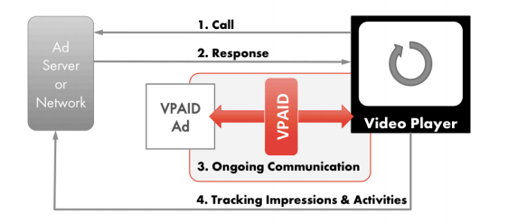

VPAID 2.0
VPAID 2.0
The IAB's Video Player Ad-Serving Interface Definition (VPAID) establishes a common interface
between video players and ad units, enabling a rich interactive in-streamad experience.
More details can be found here
How VPAID works?

- Call: The player makes an ad call to the ad server. The format for this ad call is not
specified in these guidelines in order to maintain flexibility for the many variations of
ad server formats.
- Response: The ad server responds with a VAST XML containing a VPAID-compliant
executable ad unit.
- Ongoing Communication: The video player and the ad unit remain in
communication as the ad executes and displays to the user.
Using VPAID.
player can get and set properties for the ad unit, and the ad unit can dispatch events
to the video player.
- Tracking Impressions & Activities: The video player and the ad unit can each
send impression and activity tracking requests to their respective ad servers (ad server
tracking is not specified by VPAID).
What is implemented in Kaltura?
Flash - KDP
Full support in VPAID 1.1
Missing items for VPAID 2.0:
- Skip event - AdSkipped event is not implemented yet
HTML5
The process of HTML5 VPAID:
- call to initAd with the following environment params:
initAd(width : Number, height : Number, viewMode : String, desiredBitrate : Number,
[creativeData : String], [environmentVars : String]) : void
-
Slot : the Player container .
-
videoSlot: The player element.
-
videoSlotCanAutoPlay: can you auto play the VPAID element.
Listen to the following events:
- AdLoaded : call to startAd and track the ad
- AdStopped : remove the ad and continue the video
- AdError : remove the ad and continue the video + log the error
- AdLog : ...